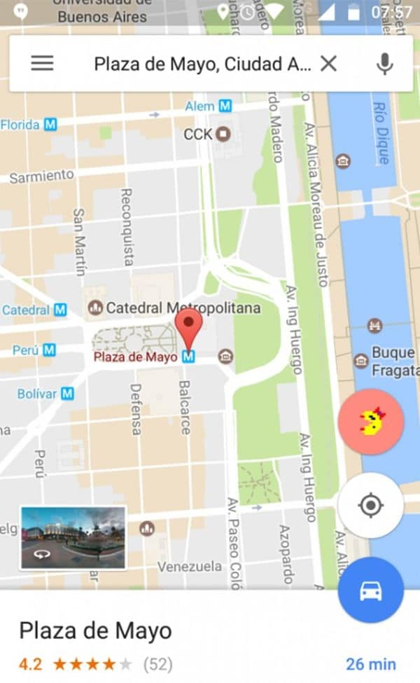

El clásico videojuego en la aplicación “Maps”
Para los nostálgicos amantes de los videojuegos clásicos Google ofrece la posibilidad de jugar a Ms. Pac-Man durante los próximos 4 días con tan sólo abrir la aplicación de Mapas en un celular o en una página web en la PC.
Chau productividad: por cuatro días podés jugar al Ms. Pac Man dentro de Maps. Menos mal que es viernes…,
publicaron en la cuenta de Twitter.
El anuncio de la compañía en las redes sociales
En la versión actualizada de Google, los usuarios pueden visualizar desde hoy el ícono del clásico videojuego de la firma Namco Bandai.
El jugador tiene cinco "vidas". Se puede controlar con el dedo en la pantallas táctiles de los smartphones y en las computadoras hay que utilizar las teclas de flechas.
Con sólo ingresar a la aplicación se puede visualizar el ícono de Ms Pac-Man
En la versión temporal que preparó la compañía se utiliza el mapa de la zona donde estamos. Sin embargo, no están disponibles las calles de nuestro país, por lo cual al iniciar el juego te envía a distintas ubicaciones.
El motivo del lanzamiento sería como parte de una "broma" de la compañía por el Día de los Inocentes.